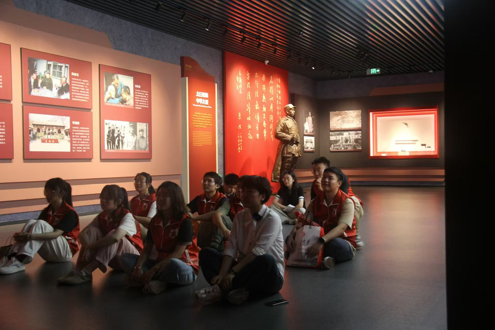
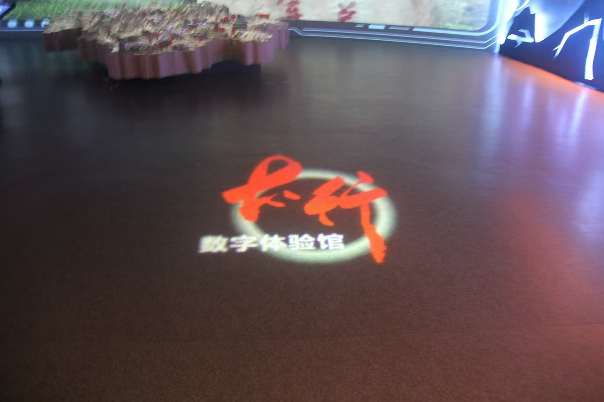
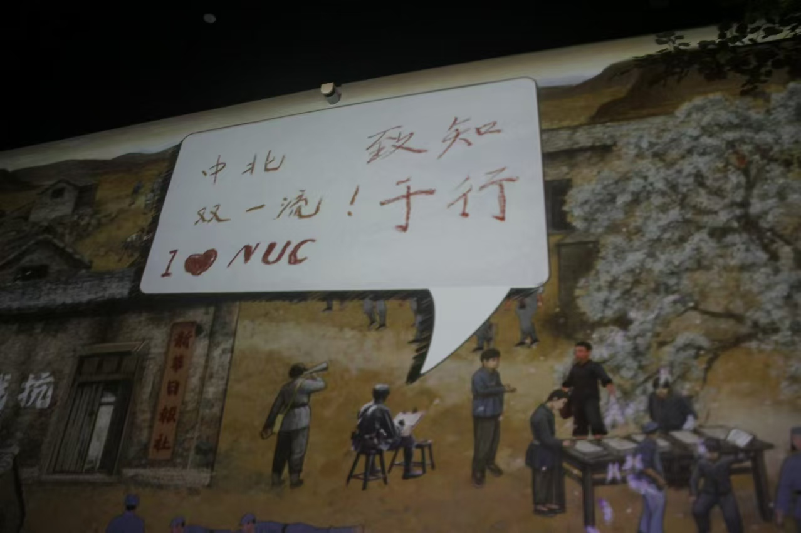

在这个充满意义的暑期，中北大学“数智赋能百年红色家书”暑期社会实践团成员在指导教师杜瑞平老师的带领下，进行了一次深刻而难忘的参观活动——麻田八路军总部纪念馆之行。
麻田八路军总部纪念馆作为左权县重要的红色基地之一，是八路军英勇抗击日寇光辉历程的历史见证，承载着弘扬传承红色历史文化的光荣使命。
上午，实践团成员怀着崇敬的心情踏入纪念馆，在工作人员的讲解下，仿佛穿越时空，回到了那个硝烟弥漫的年代。馆内丰富的历史资料、珍贵的文物以及生动的场景再现，全方位地展示了八路军在麻田期间的战斗历程和英勇事迹。同时我们在此看到了左权将军的家书的真迹，重温背后的故事，实践团的成员们仍是感动不已。左权将军的家书，字里行间充满了对家人的深深眷恋和关爱。在战火纷飞的年代，他依然怀揣着对亲情的珍视，那一句句朴素而真挚的话语让我们看到了一个铁血将军柔情的一面。然而，这种柔情并未削弱他的坚定信念和英勇无畏，反而更加凸显了他为国家、为民族舍小家为大家的伟大情怀。同学们坚定表示“我们生活在和平年代，享受着先辈们用鲜血和生命换来的幸福生活，我们深感自己肩负的责任重大。我们当以左权将军为榜样，将个人的命运与国家的命运紧密相连，在实现中华民族伟大复兴的征程中，书写属于我们的辉煌篇章。”
赓续红色血脉，传承兵工精神。在纪念馆有一面特殊的展墙，上面展示着中北大学建校以来的发展历程。在薄一波同志的题词“人民兵工第一校”以及中北大学的校徽下，杜瑞平老师满怀热泪，殷切叮嘱同学们不要忘记在抗日战争期间，革命先辈一手拿枪，一手拿书，边战斗边学习的革命精神，我们要深切缅怀革命先烈，传承发扬兵工精神，增强“军工报国、科技强国”的意识和情怀。同学们纷纷表示，必将秉承“自力更生，艰苦奋斗，开拓进取，无私奉献”的理念，勇担时代使命，不畏艰难险阻，为国家富强，民族振兴贡献出自己的力量。
“太行浩气传千古”，参观完八路军总部纪念馆，暑期社会实践团的师生们，对太行精神有了更为深刻的理解。太行精神，是中国共产党领导英雄的太行军民，用鲜血和生命谱写的革命精神。在杜瑞平老师的带领下，实践团的全体成员齐诵习近平总书记对太行精神做出的最新的诠释和解读：结合新的实际与时俱进的大力弘扬太行精神，坚定正确的理想信念，始终保持对党对人民对事业的忠诚；始终坚持执政为民的政治立场，始终保持同人民群众的密切联系；锤炼坚韧不拔、百折不挠的品格，始终保持知难而进、奋发有为的精神状态；坚守党的政治本色，始终保持艰苦奋斗的优良作风，为推动经济社会又好又快发展提供强大精神动力。
下午，在太行数字馆中，在指导教师杜瑞平的带领下，中北大学“数字赋能百年红色家书”暑期社会实践团的成员们，在这里进行了一场沉浸式太行抗战文化的数字科技之旅。馆内设有“智慧公益馆”“硝烟四起”“保卫杨家庄”“边区学习班”“太行山上”“大生产运动”“记忆与荣耀”七大主题展厅。在“智慧公益馆”主题展厅中，依托展厅将互动投影与指MR立体沙盘相结合的表现方式，实践团的队员们，以全景概览、沉浸体验等不同视角，再一次领略了左权抗战遗址的丰富内容。在“保卫杨家庄”主题展厅中，实践队员们依次上前，扛起仿真枪，向敌人发起了射击，几分钟过去，大家的表情开始沉重，没了开始的那份嬉笑打闹，因为手中的枪开始越来越沉重，扣下扳机的手指逐渐没了力气。后来我查阅了一下资料，由中北大学第一任校长—刘鼎校长提倡生产的，当时使用最广泛、性能最好的制式步枪，全枪重3.36kg，是仿真枪的几倍之多，更别提实际开枪的后坐力以及战场上敌我双方武器装备的悬殊。一切的一切，都在无声地诉说着当年的艰难与坚韧。通过这次的模拟射击体验，我们深刻感受到了八路军战士们为了民族独立和人民解放，不畏强敌、英勇奋战的伟大精神。他们在极端艰苦的条件下，坚持抗日斗争，为国家和民族的未来付出了巨大的牺牲。
此次参观不仅是一次历史的回顾，更是一次精神的洗礼。一幅幅珍贵的历史照片、一件件斑驳的抗战实物，都在诉说着抗日战争时期革命先辈在左权县的峥嵘岁月……八路军总部纪念馆，综合运用了声、光、影技术，配以幻影成像、立体景观、触摸屏等辅助手段，营造出身临其境的氛围，并通过丰富的革命抗战实物图片资料等，展示了八路军顽强抗敌，浴血奋战的战斗场景，讴歌了革命先辈们的光辉形象和革命精神。
通过这次参观，中北大学“数智赋能百年红色家书”暑期实践团的成员们深受教育和启发，我们更加坚定了数智赋能百年红色家书的责任与使命。借助大数据和人工智能技术，能够对红色家书进行深度挖掘和分析。通过对大量家书的内容进行数据化处理，可以梳理出革命先辈们在不同历史时期的思想动态、情感变化以及对革命事业的贡献。数智技术为百年红色家书的传承与弘扬带来了新的机遇和可能。我们必将结合专业所学，充分利用数智技术的优势，让红色家书在新时代绽放出更加璀璨的光芒。
兵工精神血脉传，数智赋能责任显
2024年08月21日

